costs = matrix(c(-1, 0, 5, 0), nrow = 2, dimnames =
list("Predicted Credit" = c("good", "bad"),
Truth = c("good", "bad")))
costs Truth
Predicted Credit good bad
good -1 5
bad 0 0Raphael Sonabend
帝国理工学院（Imperial College London）
Patrick Schratz
耶拿大学（Friedrich Schiller University Jena）
Damir Pulatov
怀俄明大学（University of Wyoming）
John Zobolas
奥斯陆大学医院癌症研究所（Institute for Cancer Research, Oslo University Hospital）
Lona Koers
慕尼黑大学（Ludwig-Maximilians-Universität München）
到目前为止，本书只考虑了两种任务。在第 2 章中，我们介绍了确定性回归（deterministic regression）以及确定性与概率性的单标签分类（single-label classification）（表 13.1）。但我们的基础设施同样适用于许多其他任务，其中一些任务在扩展包中可用（图 1.1），另一些则可以通过 mlr3pipelines 构建管道（pipeline）来实现。在本章中，我们将带你了解这些新任务中的一小部分，重点关注那些拥有稳定 API 的任务。在阅读本章的过程中，我们会反复提到 mlr3 的「构建模块」（building blocks），这指的是为了创建新任务而必须扩展的基础类，即 Prediction、Learner、Measure 和 Task。表 13.1 汇总了可用的扩展任务，包括它们所在的包以及任务的简要描述。
mlr3 基础设施一起使用的扩展任务列表。由于我们的贡献者社区在不断壮大，这个列表远非详尽无遗，还存在许多「实验性（experimental）」的任务实现；此列表仅代表那些具备可用接口的任务。
| 任务（Task） | 包（Package） | 描述（Description） |
|---|---|---|
| 确定性回归（Deterministic regression） | mlr3 |
对连续变量的点预测（point prediction）。 |
| 分位数回归（Quantile regression） | mlr3 |
预测连续变量的条件分位数（conditional quantile）。 |
| 确定性单标签分类（Deterministic single-label classification） | mlr3 |
为每个观测预测单一类别。 |
| 概率性单标签分类（Probabilistic single-label classification） | mlr3 |
预测观测落入一个或多个互斥类别之一的概率。 |
| 代价敏感分类（Cost-sensitive classification） |
mlr3 和 mlr3pipelines
|
与不同误分类（misclassification）代价不相等对应的分类预测。 |
| 生存分析（Survival analysis） | mlr3proba |
考虑可能的「删失（censoring）」的时间-事件预测（time-to-event predictions）。 |
| 密度估计（Density estimation） | mlr3proba |
无监督地估计概率密度函数（probability density function）。 |
| 时空分析（Spatiotemporal analysis） |
mlr3spatiotempcv 和 mlr3spatial
|
对具有空间（例如坐标）和/或时间结果的数据进行有监督预测。 |
| 聚类分析（Cluster analysis） | mlr3cluster |
无监督地估计数据点同质簇（homogeneous clusters）。 |
我们先来讨论一个不需要任何额外包或基础设施的任务，只需要用到前几章已经学过的工具。在「常规」分类中，目标是在假设所有误分类错误同等严重的情况下优化某个指标（通常是误分类率）。更一般的方法是代价敏感分类（cost-sensitive classification），其中不同类型错误所导致的代价可能不相等。代价敏感分类的目标是最小化期望代价（expected costs）。我们将使用 tsk("german_credit") 作为贯穿示例。
想象一下，你正在计算给某人一笔 5,000 美元的贷款能否在一年后带来利润（假设预期偿还 6,000 美元）。要完成这个计算，你需要预测这个人是否具有良好的信用。这是一个确定性分类问题，我们预测某人属于「好（Good）」类还是「坏（Bad）」类。现在让我们考虑每个预测及最终真相可能关联的一些代价。由于代价敏感分类是一个最小化问题，我们假设较低的代价对应较高的利润/正向结果，因此把利润写成负值、损失写成正值：
costs = matrix(c(-1, 0, 5, 0), nrow = 2, dimnames =
list("Predicted Credit" = c("good", "bad"),
Truth = c("good", "bad")))
costs Truth
Predicted Credit good bad
good -1 5
bad 0 0在这个例子中，如果模型预测该个体信用不佳（最后一行），那么既没有利润也没有损失，因为贷款并未发放。如果模型预测该个体信用良好，并且客户确实连本带利地偿还了贷款（左上角），你将获得 1,000 美元的利润。另一方面，如果他们违约（右上角），你将损失 5,000 美元。
背景与解释（译者注）：代价敏感分类与标准的分类问题之间的关键区别在于错误代价矩阵（cost matrix）的不对称性。在普通分类中，我们默认所有错误「等值」，因此模型只需努力降低总错误数；而代价敏感分类把「把坏人当好人放贷」与「把好人拒之门外」的成本区分开，模型会倾向于少犯代价更高的错误。本例中信用「好」但被预测为「坏」的代价是 0（不放贷、无损失），而信用「坏」却被预测为「好」的代价是 5（放贷后违约）。这种不平衡在现实中普遍存在，例如医疗误诊、金融风控等场景中不同类型的错误代价往往差异巨大。代价矩阵中利润记为负值、损失记为正值，是为了把问题统一转化为「最小化总代价」的优化问题。
我们现在将看到如何用 msr("classif.costs") 实现一种更精细的分类错误处理方式。该度量接受一个参数，即一个行名和列名对应任务中类别标签的矩阵。让我们把前面的保险示例付诸实践，注意我们已经按该度量的要求为代价矩阵命了名：
library(mlr3verse)
tsk_german = tsk("german_credit")
msr_costs = msr("classif.costs", costs = costs)
msr_costs
── <MeasureClassifCosts> (classif.costs): Cost-sensitive Classification ─
• Packages: mlr3
• Range: [-Inf, Inf]
• Minimize: TRUE
• Average: macro
• Parameters: normalize=TRUE
• Properties: weights
• Predict type: response
• Predict sets: test
• Aggregator: mean()learners = lrns(c("classif.log_reg", "classif.featureless",
"classif.ranger"))
bmr = benchmark(benchmark_grid(tsk_german, learners,
rsmp("cv", folds = 3)))
bmr$aggregate(msr_costs)[, c(4, 7)] learner_id classif.costs
1: classif.log_reg 0.1791
2: classif.featureless 0.8002
3: classif.ranger 0.2491在这次实验中，我们发现逻辑回归学习器碰巧表现最好，因为它最小化了期望代价（从而最大化了期望利润），而 featureless 学习器表现最差。所有损失都表现为正代价，这意味着每个模型都让我们亏钱。为了改进模型，我们现在转向阈值化（thresholding）。
正如我们在第 2 章中讨论过的，阈值化是一种微调（fine-tune）概率的方法，用来决定一个观测将被预测为哪个类别标签。目前在我们的贯穿示例中，如果好信用的概率大于 0.5，上述模型就会预测客户具有好信用。在这里，这可能不是一个合理的做法，因为由于代价不均等，我们很可能会采取更保守的行动，用更高的阈值拒绝更多的贷款申请。"threshold" 的 autoplot（图 13.1）突出显示了这一点，图中绘制了所有可能阈值下的 msr("classif.costs")。
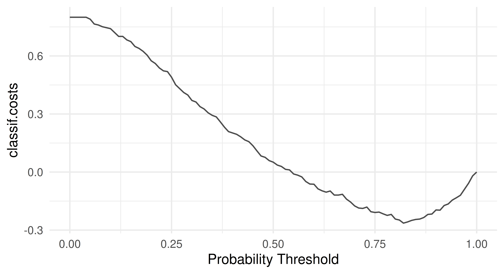
正如预期的那样，最优阈值大于 0.5，这意味着最优模型应当更频繁地预测「坏」信用。
最优阈值可以通过使用 mlr3tuning（第 4 章）和 mlr3pipelines（第 7 章）调节 po("tunethreshold") 来自动化实现。继续同一个例子：
po_cv = po("learner_cv", lrn("classif.log_reg", predict_type = "prob"))
graph = po_cv %>>% po("tunethreshold", measure = msr_costs)
learners = list(as_learner(graph), lrn("classif.log_reg"))
bmr = benchmark(benchmark_grid(tsk_german, learners,
rsmp("cv", folds = 3)))Warning:
✖ Multiple predict types detected, this will mean that you cannot
evaluate the same measures on all learners.
→ Class: Mlr3WarningVaryingPredictTypesbmr$aggregate(msr_costs)[, c(4, 7)] learner_id classif.costs
1: classif.log_reg.tunethreshold -0.1060
2: classif.log_reg 0.1481通过使用 po("learner_cv") 进行内部重采样（internal resampling），并使用 po("tunethreshold") 寻找最优阈值，我们显著提升了模型性能，现在甚至有望实现盈利。
生存分析是统计学中致力于预测/估计事件发生时间的一个领域。这个预测问题的独特之处在于，生存模型是在可能包含「删失（censoring）」的数据上训练和测试的；删失是指某些受试者的确切事件时间没有被观测到。最常见的删失类型是「右删失（right censoring）」，当感兴趣的事件在观测结束时尚未发生时便会出现这样的情况——要么是因为固定的研究截止时间（管理性删失，administrative censoring），要么是因为个体在随访中失联（随机删失，random censoring）。抽象地解释生存分析可能比较困难，所以我们用一个跑步比赛的马拉松选手作为工作示例。这里的「生存问题」是试图预测马拉松选手完成比赛的时间。然而，并非所有的完赛时间都能被观测到。例如，如果组织者在某一时间点之后停止记录完赛时间，那么任何在那一时刻之后仍在奔跑的选手都将被管理性地删失。另外，一名选手可能意外退出比赛——例如，他们的追踪芯片出现故障，或者他们意外离开赛道而不再被跟踪——这就导致了随机删失。生存分析并不是舍弃这类不完整的观测，而是引入一个状态变量来反映事件是否被观测到。在我们的例子中，如果一名选手在三个小时内完赛并被我们观测到，我们会把其结果记录为 \((3, 1)\)；如果他们在观测结束四小时时仍在奔跑（管理性删失），则记录为 \((4, 0)\)；如果他们的追踪设备在 2.5 小时时失效而我们失去了联系（随机删失），则记录为 \((2.5, 0)\)。
生存分析建模的关键在于：我们假设哪怕选手被删失，也存在着一个假想的完赛时间，生存学习器的工作就是为一名相似的选手估计在未被删失的情况下真实的生存时间会是多少（见图 13.2）。从数学上讲，这由假想的事件时间 \(Y\)、假想的删失时间 \(C\)、观测到的事件时间 \(T = \min(Y, C)\)、事件指示符 \(\Delta := (T = Y)\) 以及像往常一样的若干特征 \(X\) 来表示。学习器在 \((T, \Delta)\) 上训练，但关键在于，它们要从先前未见过的特征上预测 \(Y\)。这意味着与分类和回归不同，学习器是在两个变量 \((T, \Delta)\) 上训练的，而在 R 中，这通常被封装在一个 Surv 对象中。回到上面的例子，选手的结果可以表示为：若三小时完赛则为 \((T = 3, \Delta = 1)\)，若比赛时钟结束时仍在奔跑则为 \((T = 4, \Delta = 0)\)，若中途失去联系则为 \((T = 2.5, \Delta = 0)\)。另一个例子见下面的代码，我们随机生成了六个生存时间和六个事件指示符，结尾带 + 的结果表示该观测被删失，否则表示感兴趣的事件发生了。
Attaching package: 'survival'The following object is masked from 'package:future':
cluster[1] 0.5523+ 0.2905 0.4404+ 0.1184 0.9216+ 0.7326 熟悉生存分析的读者会意识到，上面的描述特指「右删失」。目前，mlr3 生态中只支持这一种删失形式，因此我们把讨论限制在这种情形下。关于生存分析的优秀入门读物，参见 Collett (2014)；专门针对生存分析中的机器学习，参见 R. Sonabend and Bender (2023)。
在本节的其余部分，我们将看到 mlr3proba (R. Sonabend et al. 2021) 如何为生存分析扩展 mlr3 的构建模块。我们首先考察用于构建生存分析机器学习任务的对象，然后转向我们为实现这些任务而实现的学习器，接着是用于评估生存分析预测的度量，最后我们将考虑如何在预测类型之间进行转换。
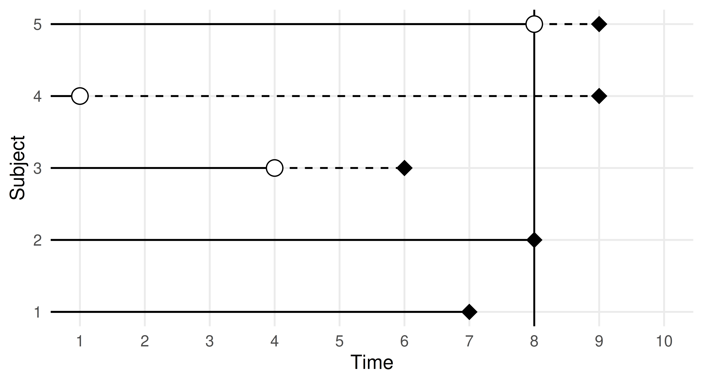
背景与解释（译者注）：删失（censoring）是生存分析最核心也最易混淆的概念。右删失指「事件在观测截止时尚未发生，只知道真实事件时间大于某个值」；与此相对的还有左删失（真实时间小于观测值）和区间删失（只知道真实时间落在一个区间内）。生存分析方法的核心价值之一，就是能够在大量观测被删失的情况下依然正确地利用其信息——直接丢弃删失观测会导致系统性偏倚（因为删失观测往往对应更长的事件时间），而简单把删失时间当作事件时间又会严重低估。`Surv` 对象用 `+` 后缀标记删失观测，R 中几乎所有生存分析函数都能理解这一约定。
正如我们在本节的引言中所看到的，生存算法需要两个训练目标，这意味着新的 TaskSurv 对象期望两个目标。创建生存任务最简单的方法是使用 as_task_surv()，如下面的代码块所示。注意它比 as_task_regr() 拥有更多参数，以反映多个目标和删失类型：time 和 event 参数接受表示存储「时间」和「事件」变量的列名的字符串，type 指删失类型（目前仅支持右删失，因此这是默认值）。as_task_surv() 会将目标列强制转换为一个 Surv 对象。在本节中，我们将使用 rats 数据集作为贯穿示例，该数据集研究药物处理是否成功阻止了 150 只老鼠发展出肿瘤。这个数据集自己也承认并不完美，通常应被当作「模拟（dummy）」数据，它适合做示例，但不适合真实的实证分析。
library(mlr3verse)
library(mlr3proba)
library(survival)
tsk_rats = as_task_surv(survival::rats, time = "time",
event = "status", type = "right", id = "rats")
tsk_rats$head() time status litter rx sex
1: 101 0 1 1 f
2: 49 1 1 0 f
3: 104 0 1 0 f
4: 91 0 2 1 m
5: 104 0 2 0 m
6: 102 0 2 0 m用 autoplot 绘制任务会得到一个 Kaplan-Meier 图（图 13.3），它是训练集中平均观测的生存概率的非参数估计。
autoplot(tsk_rats)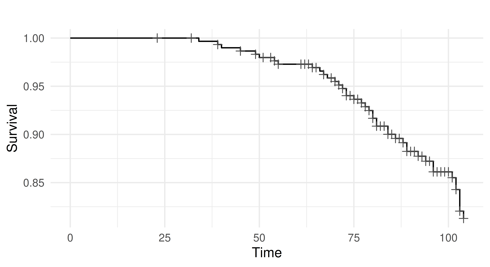
tsk("rats") 的 Kaplan-Meier 图。x 轴是时间变量，y 轴是生存函数 S(T)，定义为 \(1 -\) F(T)，其中 F 是累积分布函数。十字标记表示发生删失的时间点。
除了创建自己的任务之外，你还可以加载 mlr3proba 内置的任何任务：
as.data.table(mlr_tasks)[task_type == "surv"] key label task_type nrow ncol properties lgl
1: actg ACTG 320 surv 1151 13 0
2: gbcs German Breast Cancer surv 686 10 0
3: gbsg German Breast Cancer surv 686 10 0
4: grace GRACE 1000 surv 1000 8 0
5: lung Lung Cancer surv 168 9 0
6: mgus MGUS surv 176 9 0
7: rats Rats surv 300 5 0
8: veteran Veteran surv 137 8 0
9: whas Worcester Heart Attack surv 481 11 0
8 variables not shown: [int, dbl, chr, fct, ord, pxc, dte, lt]LearnerSurv 和 PredictionSurv 对象的接口与第 2 章讨论的回归和分类设置完全相同。与这些设置类似，生存学习器也是用 lrn() 构建的。
mlr3proba 与 mlr3 具有不同的预测接口，因为只要可能，所有类型的预测（「预测类型」）都会返回给所有生存模型——也就是说，如果一个模型能够计算某种预测类型，那么它将被返回到 PredictionSurv 中。这一设计决策的理由是，所有这些预测类型都可以相互转换，因此一次性全部返回在计算上比重新运行模型来改变预测类型更简单。在生存分析中，可以进行以下预测：
response —— 预测的生存时间。distr —— 预测的生存分布，无论是离散的还是连续的。lp —— 线性预测器（linear predictor），计算为拟合系数乘以测试数据。crank —— 连续风险排序（continuous risk ranking）。我们将逐一更详细地介绍这些预测类型并给出例子，让它们不那么抽象。我们将使用在 tsk("rats") 上训练的 lrn("surv.coxph") 作为贯穿示例，因为对该模型而言，除 response 之外的所有预测类型都可以计算。
tsk_rats = tsk("rats")
split = partition(tsk_rats)
prediction_cph = lrn("surv.coxph")$train(tsk_rats, split$train)$
predict(tsk_rats, split$test)
prediction_cph
── <PredictionSurv> for 99 observations: ────────────────────────────────
row_ids time status crank lp distr
3 104 FALSE -0.4356 -0.4356 <list[1]>
5 104 FALSE -3.1265 -3.1265 <list[1]>
7 104 FALSE 0.4090 0.4090 <list[1]>
--- --- --- --- --- ---
297 79 TRUE 0.4300 0.4300 <list[1]>
298 92 FALSE -1.4339 -1.4339 <list[1]>
300 102 FALSE -2.2609 -2.2609 <list[1]>可能令许多人感到反直觉的是，预测生存时间的 response 预测是生存分析中最不常见的预测类型。可能的原因在于删失的存在。对于许多观测，我们很少能观测到真实的生存时间，因此任何生存模型都很难有把握地对生存时间做出预测。下面的代码说明了这一点。
在下面的示例中，我们训练并预测了一个生存 SVM（lrn("surv.svm")），注意我们使用 type = "regression" 来选择优化生存时间预测的算法，而 gamma.mu = 1e-3 是随意选择的，因为这是一个必填参数（这个参数通常应当被调节）。然后我们把模型的预测与真实数据进行比较。
library(mlr3extralearners)
prediction_svm = lrn("surv.svm", type = "regression", gamma = 1e-3)$
train(tsk_rats, split$train)$predict(tsk_rats, split$test)
data.frame(pred = prediction_svm$response[1:3],
truth = prediction_svm$truth[1:3]) pred truth
1 86.36 104+
2 86.16 104+
3 85.95 104+从输出中可以看到，我们的预测都小于真实的观测时间，这意味着我们知道模型低估了真实值。然而，由于每个真实值都是删失时间，我们完全没有办法知道这些预测是略微糟糕还是极其糟糕（也就是说，真实的生存时间可能是 \(105, 99, 92\)，也可能是 \(300, 1000, 200\)）。因此，在没有现实可行的方法来评估这些模型的情况下，生存时间预测很少有用。
与回归中确定性/点预测最为常见不同，在生存分析中分布预测要常见得多。因此你会发现，mlr3proba 中的大多数生存模型默认都会做出分布预测。这些预测使用的是 distr6 包实现的，它可以实现生存曲线（定义为 \(1 -\) 累积分布函数）的可视化与评估。下面我们从贯穿示例中提取前三个 $distr 预测，并计算在 \(t = 77\) 处的生存概率。
prediction_cph$distr[1:3]$survival(77) [,1] [,2] [,3]
77 0.9412 0.9959 0.8684输出表明，前三只被预测的老鼠分别在时间 77 时活着的概率为 94.1%、99.6%、86.8%。
lp，在学术写作中常写作 \(\eta\)，是计算上最简单的预测，并且在回归建模中有自然的对应物。熟悉线性回归的读者会知道，在拟合简单线性回归模型 \(Y = X\beta\) 时，我们估计的是 \(\beta\) 的值，而估计的线性预测器（lp）就是 \(X\hat{\beta}\)，其中 \(\hat{\beta}\) 是我们估计的系数。在简单的生存模型中，线性预测器是同样的量（只是估计方式稍复杂一些）。mlr3proba 中的学习器实现主要以机器学习为导向，其中很少有模型具有简单的线性形式，这意味着大多数这样的模型都无法计算 lp。在实践中，当用于预测时，lp 是相对风险/连续排序预测的代理，这一点将在下面讨论。
最后一种预测类型 crank 在生存分析中最常见，或许也最容易令人困惑。学术文献常常提到生存分析中的「风险（risk）」预测（因此生存模型常被称为「风险预测模型」），却没有定义「风险」究竟是什么意思。通常，风险被定义为 \(\exp(\eta)\)，因为这是简单线性生存模型中的一个常见量。然而，有时风险被定义为 \(\exp(-\eta)\)，有时它又是一个没有任何有意义的解释的任意量。为避免这种混乱，在 mlr3proba 中我们定义了预测类型 crank，它代表连续排名（continuous ranking）。这最好通过例子来理解；接续前面的内容，我们输出前三个 crank 预测。
prediction_cph$crank[1:3] 1 2 3
-0.4356 -3.1265 0.4090 输出告诉我们，第一只老鼠的死亡风险最低（较小的值代表较低的风险），第三只老鼠的风险最高。预测之间的距离也告诉我们，第二只和第三只老鼠之间的风险差异小于第一只和第二只之间的差异。实际的数值本身没有意义，因此在样本（或论文或实验）之间比较 crank 值是没有意义的。
crank 预测类型在实践中信息量大且常见，因为它可以帮助识别相对于彼此风险更低/更高的观测，这对于资源分配（例如，应给哪一位患者使用昂贵的治疗）和临床试验（例如，治疗组的患者患疾病 X 的风险是否低于对照组）都很有用。
不同 R 包对生存预测中「风险」的解读各不相同，有时甚至在同一包内的不同模型之间也有所不同。在 mlr3proba 中，对 crank 有一个一致的解读：较低的值代表事件发生的风险较低，较高的值代表风险较高。
mlr3proba 中的生存模型使用 MeasureSurv 对象进行评估，这些对象以惯常的方式用 msr() 构建。
一般来说，生存度量可以分为以下几类：
crank 和/或 lp 预测。crank 和/或 lp 预测。distr 预测。as.data.table(mlr_measures)[
task_type == "surv", c("key", "predict_type")][1:5] key predict_type
1: surv.brier distr
2: surv.calib_alpha distr
3: surv.calib_beta lp
4: surv.calib_index distr
5: surv.chambless_auc lp在文献中，对于「最佳」的生存评估度量并没有共识。我们推荐使用 ISBS（积分生存 Brier 分数，Integrated Survival Brier Score）（msr("surv.graf")）来评估 distr 预测的质量，使用一致性指数（concordance index）（msr("surv.cindex")）来评估模型的判别能力，使用 D-校准（D-Calibration）（msr("surv.dcalib")）来评估模型的校准情况。
利用这些度量，我们现在可以评估上一示例中的预测。
surv.graf surv.cindex surv.dcalib
0.06064 0.78928 0.82181 模型的性能看起来还可以，因为 ISBS 和 DCalib 相对较低，C-index 大于 0.5；然而，如果不与某个基线（通常是 Kaplan-Meier）进行比较，就很难确定任何生存模型的性能。
在 mlr3proba 的整个文档中，我们提到「原生（native）」和「组合（composed）」预测。我们将「原生」预测定义为模型在没有任何后处理的情况下做出的预测，而「组合」预测则是在后处理之后返回的预测。
mlr3proba 在内部使用组合来为每个学习器返回一个 "crank" 预测。这是为了确保我们能够至少根据一个标准（判别性能）有意义地对所有模型进行基准测试。该包使用以下规则来创建 "crank" 预测：
crank = risk（我们可能会将其乘以 \(-1\) 以确保「低值低风险」的解读）。response 预测，则我们设 crank = -response。lp 预测，则我们设 crank = lp（如有需要则为 crank = -lp）。distr 预测，则我们设 crank 为累积风险函数（cumulative hazard function）之和（关于我们为什么选择这个方法，详见 R. Sonabend, Bender, and Vollmer (2022) 的完整讨论）。在本节开头，我们提到预测类型之间可以相互转换。在 mlr3proba 中，这可以通过「组合器（compositor）」管道来实现（第 7 章）。该包中实现了若干管道，但其中三个特别专注于预测类型的转换：
pipeline_crankcompositor() —— 将 "distr" 预测转换为 "crank"pipeline_distrcompositor() —— 将 "lp" 预测转换为 "distr"pipeline_responsecompositor() —— 将 "distr" 预测转换为 "response"（生存时间）每当从生存模型返回预测时，我们都会在内部使用第一个管道的一个版本，以便每个模型都有 "crank" 预测类型——所以只使用第一个管道来覆盖这些排序预测。在实践中，第二个管道更为常见，因为 Cox 或加速失效时间（Accelerated Failure Time，AFT）类型的模型总是返回线性预测器（"lp"），但有时内部的 predict() 函数并不提供到生存分布预测（"distr"）的转换。第三个管道将预测的生存曲线汇总为单个数字（期望生存时间），且如前所述，它很少对评估生存机器学习模型的性能有用。
在下面的示例中，我们加载 rats 数据集，移除因子列，然后将数据划分为训练集和测试集。我们围绕一个生存 XGBoost 加速失效时间（AFT）学习器（lrn("surv.xgboost.aft")）构建 distrcompositor 管道，该学习器默认预测 "lp"、"crank" 和 "response"。在管道中，我们指定用 Kaplan-Meier 估计器估计基线分布（estimator = "kaplan"），并希望为估计的分布假设一个 AFT 形式（form = "aft"）。然后我们以惯常的方式训练和预测，现在可以在输出中看到 distr 预测。
library(mlr3verse)
library(mlr3extralearners)
tsk_rats = tsk("rats")$select(c("litter", "rx"))
split = partition(tsk_rats)
learner = lrn("surv.xgboost.aft", nrounds = 10)
# no distr output
learner$train(tsk_rats, split$train)$predict(tsk_rats, split$test)
── <PredictionSurv> for 99 observations: ────────────────────────────────
row_ids time status crank lp response
1 101 FALSE -4.648 -4.648 104.3
6 102 FALSE -5.576 -5.576 264.1
9 104 FALSE -5.576 -5.576 264.1
--- --- --- --- --- ---
294 64 FALSE -4.754 -4.754 116.0
295 104 FALSE -4.661 -4.661 105.8
296 104 FALSE -4.661 -4.661 105.8graph_learner = ppl(
"distrcompositor",
learner = learner,
estimator = "kaplan",
form = "aft",
graph_learner = TRUE
)
# now with distr
graph_learner$train(tsk_rats, split$train)$predict(tsk_rats, split$test)
── <PredictionSurv> for 99 observations: ────────────────────────────────
row_ids time status crank lp response distr
1 101 FALSE -4.648 -4.648 104.3 <list[1]>
6 102 FALSE -5.576 -5.576 264.1 <list[1]>
9 104 FALSE -5.576 -5.576 264.1 <list[1]>
--- --- --- --- --- --- ---
294 64 FALSE -4.754 -4.754 116.0 <list[1]>
295 104 FALSE -4.661 -4.661 105.8 <list[1]>
296 104 FALSE -4.661 -4.661 105.8 <list[1]>从数学上讲，我们做了如下工作：
关于预测类型和组合的更详细信息，我们推荐 Kalbfleisch and Prentice (2011)。
最后，我们将在一个小型基准测试实验中把以上所有内容付诸实践。我们首先加载 tsk("grace")（只有数值特征）并随机抽样 500 行。然后我们选择 ISBS、D-校准和 C-index 来评估预测，搭建我们在上一个实验中使用的同一个管道，并加载一个 Cox PH 和一个 Kaplan-Meier 估计器。我们用三折 CV 运行实验并聚合结果。
set.seed(42)
library(mlr3extralearners)
tsk_grace = tsk("grace")
tsk_grace$filter(sample(tsk_grace$nrow, 500))
msr_txt = c("surv.graf", "surv.cindex", "surv.dcalib")
measures = msrs(msr_txt)
graph_learner = ppl(
"distrcompositor",
learner = lrn("surv.xgboost.aft", nrounds = 10),
estimator = "kaplan",
form = "aft",
graph_learner = TRUE,
scale_lp = TRUE
)
graph_learner$id = "XGBoost-AFT"
learners = c(lrns(c("surv.coxph", "surv.kaplan")), graph_learner)
bmr = benchmark(benchmark_grid(tsk_grace, learners,
rsmp("cv", folds = 3)))
bmr$aggregate(measures)[, c("learner_id", ..msr_txt)] learner_id surv.graf surv.cindex surv.dcalib
1: surv.coxph 0.09898 0.8422 5.329
2: surv.kaplan 0.20225 0.5000 4.149
3: XGBoost-AFT 0.21354 0.8393 6.126在这个小型实验中，XGBoost-AFT 和 Cox PH 的判别能力最好，Kaplan-Meier 基线的校准最好，而 Cox PH 的整体预测准确性最高（ISBS 最低）。
密度估计是一种学习任务，用于估计生成单变量数据集的那个未知分布，更简单地说，就是估计单个变量的概率密度（或质量）函数。与生存分析一样，密度估计也是在 mlr3proba 中实现的，因为两者都可以做出概率分布预测（这就是「mlr3**proba**bilistic」（概率）这个名称中 proba 的由来）。无条件密度估计（即不带任何协变量地估计一个目标）被视为无监督任务，这意味着「真相」永远不会被知晓。关于密度估计的综述，参见 Silverman (1986)。
mlr3proba 包通过以下对象为密度估计扩展 mlr3：
TaskDens 用于定义密度任务。LearnerDens 作为密度估计器的基类。PredictionDens 用于密度预测。MeasureDens 作为密度性能度量的专门类。我们将逐一讨论。
背景与解释（译者注）：密度估计属于无监督学习，因为它没有「目标变量」用于有监督的学习信号。它与回归/分类的关键区别在于：有监督任务通常只估计条件分布的某个概括量（如均值或类别），而密度估计要尽可能完整地恢复整个分布。这在风险建模、异常检测等场景中非常有用。`mlr3proba` 之所以同时实现生存分析和密度估计，正是因为这两个任务的核心预测对象都是「概率分布」（`distr` 预测类型），本质上都依赖 `distr6` 包的分布对象体系。
由于密度估计是无监督任务，因此没有用于预测的目标。在下面的代码中，我们使用 as_task_dens() 构造一个密度任务，它接受一个参数，即一个恰好只有一列的 data.frame 类型对象（我们将用这一列来估计底层分布）。
tsk_dens = as_task_dens(data.table(x = rnorm(1000)))
tsk_dens
── <TaskDens> (1000x1) ──────────────────────────────────────────────────
• Target:
• Properties: -
• Features (1):
• dbl (1): x与其他任务一样，我们也包含了一些随 mlr3proba 附带的任务：
as.data.table(mlr_tasks)[task_type == "dens", c(1:2, 4:5)] key label nrow ncol
1: faithful Old Faithful Eruptions 272 1
2: precip Annual Precipitation 70 1密度学习器可以返回以下预测类型：
distr —— 概率分布pdf —— 概率密度函数（probability density function）cdf —— 累积分布函数（cumulative distribution function）所有学习器都会返回 distr 和 pdf 预测，但只有部分学习器能够进行 cdf 预测。同样地，distr 预测类型是使用 distr6 实现的。在下面的代码中，我们用直方图学习器训练并「预测」，然后绘制估计的概率密度函数（图 13.4），它与底层的正态分布数据非常接近。
lrn_hist = lrn("dens.hist")
prediction = lrn_hist$train(tsk_dens, 1:900)$predict(tsk_dens, 901:1000)
x = seq.int(-2, 2, 0.01)
df = data.frame(x = x, y = prediction$distr$pdf(x))
ggplot(df, aes(x = x, y = y)) + geom_line() + theme_minimal()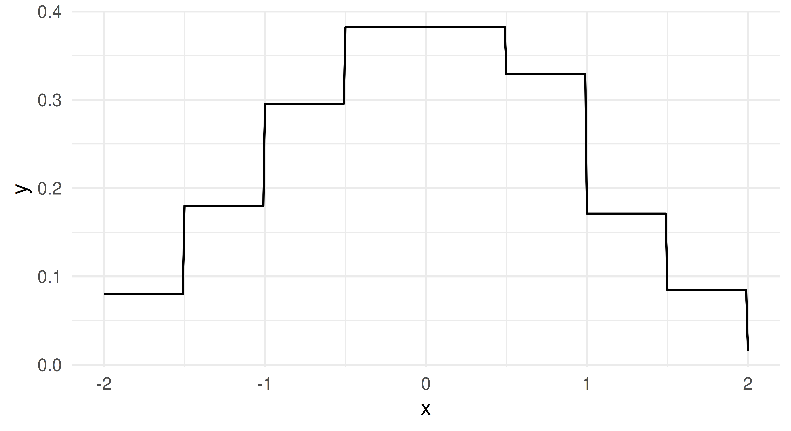
pdf 和 cdf 预测类型分别只是 distr$pdf 和 distr$cdf 的包装：
prediction = lrn_hist$train(tsk_dens, 1:10)$predict(tsk_dens, 11:13)
# pdf and cdf columns in output
prediction
── <PredictionDens> for 3 observations: ─────────────────────────────────
row_ids pdf cdf
11 0.6 0.4849
12 0.2 0.3992
13 0.6 0.6208
1 variable not shown: [distr]# comparing cdf from prediction to $cdf method from distr
cbind(prediction$distr$cdf(tsk_dens$data()$x[11:13]),
prediction$cdf[1:3]) [,1] [,2]
[1,] 0.4849 0.4849
[2,] 0.3992 0.3992
[3,] 0.6208 0.6208在本书出版时，mlr3proba 为密度估计实现的唯一度量是 logloss（对数损失），其定义方式与分类中相同，\(L(y) = -\log(\hat{f}_Y(y))\)，其中 \(\hat{f}_Y\) 是我们估计的概率密度函数。将这一点与上述内容结合起来，我们现在就可以训练密度学习器、估计分布并评估我们的估计：
msr_logloss = msr("dens.logloss")
msr_logloss
── <MeasureDensLogloss> (dens.logloss): Log Loss ────────────────────────
• Packages: mlr3 and mlr3proba
• Range: [0, Inf]
• Minimize: TRUE
• Average: macro
• Parameters: eps=1e-15
• Properties: -
• Predict type: pdf
• Predict sets: test
• Aggregator: mean()prediction$score(msr_logloss)dens.logloss
0.877 这个输出在与基准测试实验中的其他学习器比较时最容易解读，所以让我们把所有内容放在一起，使用一些内置的密度学习器在 tsk("faithful") 任务上进行一个小型基准测试研究：
pendensity 包已于 2026 年从 CRAN 上移除。因此，下面的代码块将无法运行。详情参见 https://github.com/mlr-org/mlr3book/issues/935。我们将很快替换 dens.pen。
library(mlr3extralearners)
tsk_faithful = tsk("faithful")
learners = lrns(c("dens.hist", "dens.pen", "dens.kde"))
measure = msr("dens.logloss")
bmr = benchmark(benchmark_grid(tsk_faithful, learners,
rsmp("cv", folds = 3)))
bmr$aggregate(measure)autoplot(bmr, measure = measure)该实验的结果（?fig-beyond-density）表明，复杂的惩罚密度估计器（Penalized Density Estimator）并没有胜过基线直方图，但核密度估计器（Kernel Density Estimator）至少在 logloss 结果上始终更好（即更低）。
聚类分析（cluster analysis）是 mlr3 中实现的另一个无监督任务。聚类分析的目标是把数据分组为若干簇（cluster），每个簇包含彼此相似的观测。相似性基于事先指定的度量来判定，而这些度量取决于具体任务与应用场景。与分类不同——分类要为每个观测预测一个类别——在聚类分析中并不存在可供预测的「真实」标签或类别。
mlr3cluster 包通过以下对象扩展 mlr3 以支持聚类分析：
TaskClust 用于定义聚类任务LearnerClust 作为聚类学习器的基类PredictionClust 作为 Prediction 对象的专门类MeasureClust 作为性能度量的专门类下面我们将逐一讨论。
背景与解释（译者注）：聚类是无监督学习（unsupervised learning）的典型任务：数据没有标签，算法需要自己发现数据内在的结构。这里「相似性」并非天生的属性，而完全依赖于我们选择的距离度量与特征表示——同一份数据先用欧氏距离、再用余弦距离聚类，往往会得到差别很大的结果。因此聚类结果更多是「在给定度量与超参数下的一个划分方案」，而不是数据中客观存在的「真实类别」。这与 K-均值（K-means）、层次聚类（hierarchical clustering）等经典算法一脉相承，只是 mlr3cluster 把它们包装成了统一的 LearnerClust 接口，从而可以和分类、回归学习器放进同一个基准测试（benchmark）框架里比较。阅读本章时请始终带着这个前提：聚类没有标准答案。
与密度估计类似（第 13.3 节），聚类没有可供预测的目标，因而 TaskClust 中也没有 truth 字段。作为示例，我们将使用 ruspini 数据集——它有 75 行、两列，最早由 Ruspini (1970) 提出，用于演示各种不同的聚类技术。该数据集中的观测自然形成四个簇（图 13.5）。在下面的代码中，我们用 as_task_clust() 构造一个聚类任务，该函数只接受一个参数，即一个 data.frame 类型的对象。
library(mlr3verse)
library(cluster)
tsk_ruspini = as_task_clust(ruspini)
tsk_ruspini
── <TaskClust> (75x2) ───────────────────────────────────────────────────
• Target:
• Properties: -
• Features (2):
• int (2): x, ytsk_ruspini$data(1:3) # 打印前 3 行 x y
1: 4 53
2: 5 63
3: 10 59autoplot(tsk_ruspini)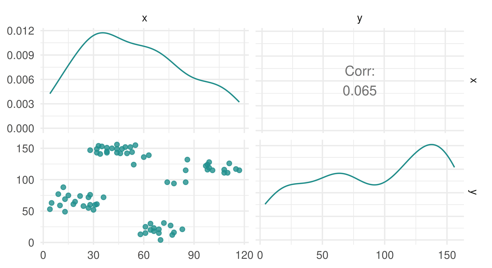
ruspini 数据集的分布。
严格来说，我们其实不必为 ruspini 数据集新建任务，因为该包中已经内置了这个任务，此外还包含另一个任务：
as.data.table(mlr_tasks)[task_type == "clust", c(1:2, 4:5)] key label nrow ncol
1: ruspini Ruspini 75 2
2: usarrests US Arrests 50 4与密度估计一样，为了与 mlr3 接口保持一致，我们也沿用「训练（training）」和「预测（predicting）」这两个说法来描述聚类；但严格说来，它们应该叫「聚类（clustering）」和「分配（assigning）」（后者我们很快会再谈）。聚类学习器提供两种 predict_types：
"partition" – 估计每个观测落入哪个簇"prob" – 每个观测属于各个簇的概率与分类类似，聚类学习器的预测类型要么是确定性的（"partition"），要么是概率性的（"prob"）。
下面我们构造一个 C-Means 聚类学习器，其预测类型为 "prob"、簇数为 3（centers = 3），在 ruspini 数据集上训练它，然后返回六个随机观测的簇分配（$assignments）。
lrn_cmeans = lrn("clust.cmeans", predict_type = "prob", centers = 3)
lrn_cmeans
── <LearnerClustCMeans> (clust.cmeans): Fuzzy C-Means ───────────────────
• Model: -
• Parameters: centers=3
• Packages: mlr3, mlr3cluster, e1071, and clue
• Predict Types: partition and [prob]
• Feature Types: logical, integer, and numeric
• Encapsulation: none (fallback: -)
• Properties: complete, fuzzy, and partitional
• Other settings: use_weights = 'error', predict_raw = 'FALSE'lrn_cmeans$train(tsk_ruspini)
lrn_cmeans$assignments[sample(tsk_ruspini$nrow, 6)][1] 2 1 1 1 1 1由于聚类是无监督的，对新数据使用 predict 往往说不通，但通过 mlr3 接口这仍然是可以做到的。
# 用不同的数据来估计（少见的用例）
lrn_cmeans$train(tsk_ruspini, 1:30)$predict(tsk_ruspini, 31:32)
── <PredictionClust> for 2 observations: ────────────────────────────────
row_ids partition prob.1 prob.2 prob.3
31 2 0.01815 0.9663 0.01552
32 2 0.01178 0.9782 0.01002# 用与估计时相同的数据（常见的用例）
prediction = lrn_cmeans$train(tsk_ruspini)$predict(tsk_ruspini)
autoplot(prediction, tsk_ruspini)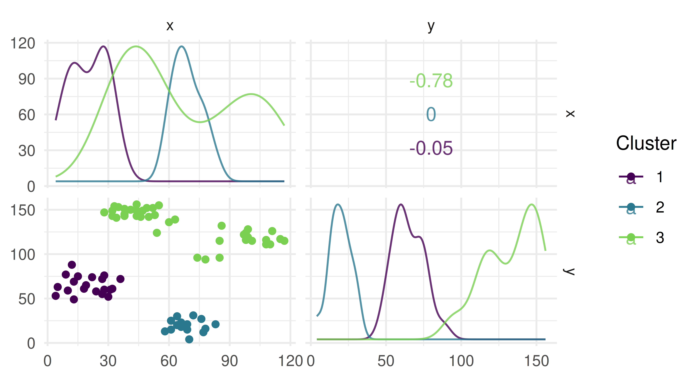
虽然有两种预测类型，但对某些学习器而言「预测」永远说不通，例如层次聚类。在层次聚类中，目标是通过把大簇拆分成小簇、或把小簇合并成大簇，来构建一棵嵌套簇的层次结构。最终结果是一棵树或树状图（dendrogram），而加入新的数据点就可能改变它。为保持接口一致性，mlr3cluster 仍然为层次聚类提供了 predict 方法，但会附带一条警告：
lrn_hclust = lrn("clust.hclust", k = 2)
lrn_hclust$train(tsk_ruspini)$predict(tsk_ruspini)Warning:
✖ Learner 'clust.hclust' doesn't predict on new data and predictions may
not make sense on new data.
→ Class: Mlr3WarningInput
── <PredictionClust> for 75 observations: ───────────────────────────────
row_ids partition
1 1
2 1
3 1
--- ---
73 1
74 1
75 1autoplot(lrn_hclust) + theme(axis.text = element_text(size = 5.5))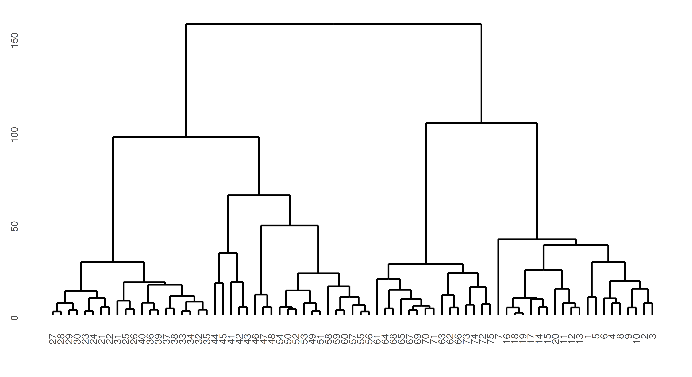
ruspini 数据集层次聚类结果的树状图。y 轴表示点的相似度，因此位置越靠下（x 轴）的观测相似度越高、越容易被连在一起。最上方的分叉代表两个簇的分离。
在这种情况下，predict 方法所做的仅仅是按学习器的 k 参数所指定的簇数，把树状图切开而已。
正如前面讨论过的，无监督任务在模型评估时没有可供比较的真实标签数据。不过，我们仍然可以通过量化同一簇内对象之间关联的紧密程度（簇内聚度，cluster cohesion），以及不同簇之间彼此区分的程度（簇间离散度，cluster separation），来衡量簇分配的质量。mlr3 中提供了若干内置的评估指标来考察聚类质量，可以在 mlr_measures 字典中检索到。
两个常用的度量是簇内平方和（within sum of squares，WSS）度量（msr("clust.wss")）和轮廓系数（silhouette coefficient，msr("clust.silhouette")）。WSS 计算观测与其簇心之间平方差的总和，用以量化簇的聚度（数值越小说明簇越紧凑）。轮廓系数则量化每个点归属于其所分配簇、而非邻近簇的程度，得分越接近 1 表示聚类效果越好，越接近 -1 表示聚类效果越差。请注意，mlr3cluster 中的轮廓度量返回的是所有观测的平均轮廓得分，并且当只有一个簇时，该度量直接输出 0。
把这些与上面的内容结合起来，我们现在就可以为我们的聚类估计打分（注意必须把 task 传给 $score）：
clust.wss clust.silhouette
5.116e+04 6.414e-01 非常高的 WSS 和中等偏上的平均轮廓系数表明，我们的聚类结果还有改进空间。
由于没有真实标签可依，把一个无监督任务压缩成一个量化指标往往未必有多大用处；相比之下，可视化（下一节讨论）可能是评估聚类质量更有效的工具。
由于聚类是无监督任务，可视化不仅对「评估」模型至关重要，也能帮助我们判断学习器在我们的任务上是否表现得符合预期。本节先介绍用于辅助聚类选择（clustering choices）的可视化，随后再讨论用于评估模型性能的图形。
依靠聚类度量来评估聚类质量很容易，但这样做需要谨慎，因为在模型之间做选择时，最终可能取决于簇是如何形成的等其他决策。举个例子，考虑由 mlbench.spirals 生成的数据，它会形成两条彼此缠绕的独立曲线（图 13.8）。
spirals = mlbench::mlbench.spirals(n = 300, sd = 0.01)
tsk_spirals = as_task_clust(as.data.frame(spirals$x))
autoplot(tsk_spirals)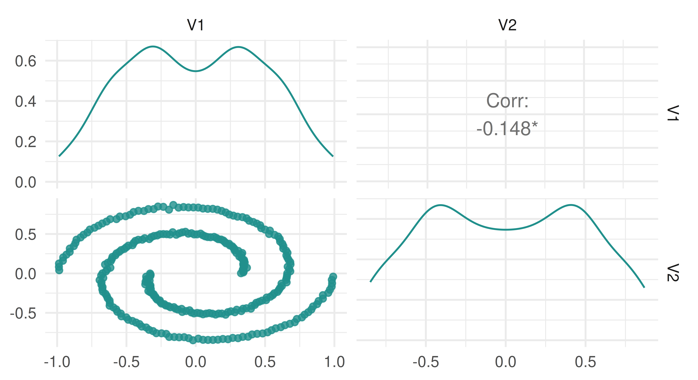
spirals 数据的分布。
现在让我们看看在这份数据上拟合两个聚类学习器会发生什么：
learners = list(
lrn("clust.kmeans"),
lrn("clust.dbscan", eps = 0.1)
)
bmr = benchmark(benchmark_grid(tsk_spirals, learners, rsmp("insample")))
bmr$aggregate(msr("clust.silhouette"))[, c(4, 7)] learner_id clust.silhouette
1: clust.kmeans 0.37248
2: clust.dbscan 0.02935我们看到 K-均值聚类给出的平均轮廓得分更高，于是可能会得出结论：带有两个簇心的 K-均值学习器比 DBSCAN 方法是更好的选择。然而现在请看一看 图 13.9 中的簇分配图（autoplot.PredictionClust 虽然也可用，但此处我们不用它，以便突出显示其中两幅特定的图）。
library(patchwork)
# 取得 K-Means 与 DBSCAN 的划分结果
pred_kmeans = as.factor(bmr$resample_result(1)$prediction()$partition)
pred_dbscan = as.factor(bmr$resample_result(2)$prediction()$partition)
# 绘图
df_kmeans = cbind(tsk_spirals$data(), clust = pred_kmeans)
df_dbscan = cbind(tsk_spirals$data(), clust = pred_dbscan)
map = aes(x = V1, y = V2, color = clust)
p_kmeans = ggplot(df_kmeans, map) + ggtitle("K-means")
p_dbscan = ggplot(df_dbscan, map) + ggtitle("DBSCAN")
p_kmeans + p_dbscan + plot_layout(guides = "collect") & geom_point() &
theme_minimal() & ggplot2::scale_colour_viridis_d(end = 0.8)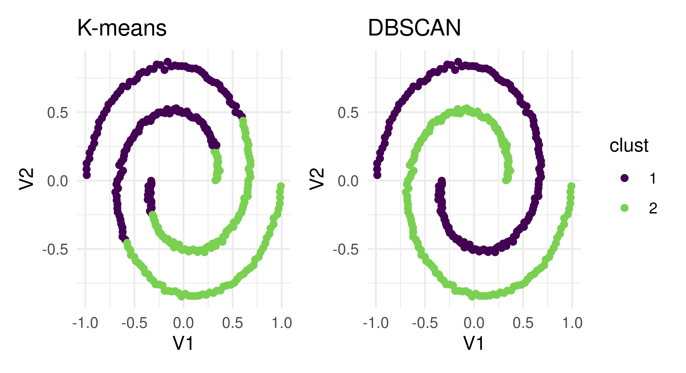
lrn("clust.kmeans") 与 lrn("clust.dbscan") 所估计出的簇。两者都产生了两个界限分明的簇，但分离的方式不同。
这两个学习器得到了两种不同的结果，都能干净地分开簇——K-均值算法把属于同一条曲线的点分到了两个不同的簇，而 DBSCAN 则把每条曲线各自划为一个簇。这两种做法中哪一个是正确的？答案是：取决于你的具体任务和聚类分析的目标。如果我们只依赖轮廓得分，那么聚类是如何进行的这些细节就会被掩盖，我们也就无法判断哪种方法更适合该任务。
背景与解释（译者注）：这个螺旋（spirals）数据集是聚类文献中著名的反例，它用来说明「无监督聚类中不存在普适的最好算法」。K-均值隐含假设簇是凸的、大小相近、方差相近，它以欧氏距离为基础，因此只能切出直线边界；DBSCAN 基于密度连通性，能跟随任意形状的弯曲结构。但轮廓系数（silhouette）度量的是「到本簇质心的距离」与「到最近邻簇质心的距离」之比，它是嵌入在欧氏几何里的量，无法识别螺旋这种拓扑结构上的差异。原文此处存在一处表述上的硬伤：作者由轮廓得分（K-均值 0.37248 > DBSCAN 0.02935）推出「K-均值是更好的选择」，但随后的图 13.9 又显示 DBSCAN 的划分才符合数据的真实生成结构。正确理解应是：轮廓得分在此处具有误导性，度量指标必须与可视化结合使用，脱离任务背景单看数值会得出错误结论。这也是本节反复强调「可视化比量化指标更可靠」的用意所在。
mlr3viz 中为支持聚类学习器评估而实现的两幅最重要的图，是 PCA 图和轮廓图。
主成分分析（principal components analysis，PCA）是机器学习中常用的一种降维方法，用于减少数据集中的变量数量，或用于可视化最重要的若干「成分」——所谓成分，就是对数据集特征所做的线性变换。如果某个成分的方差更大（因而预测能力更强），就认为它更重要。在聚类的场景中，把观测按前两个主成分作图、再按簇着色，我们就能把高维数据集可视化出来，并且预期会看到观测分成界限分明的若干组。
由于我们这个贯穿始终的示例只有两个特征，用 PCA 来可视化数据就没有意义了。所以我们改用一个基于 USArrests 数据集的任务。画出 PCA 的结果（图 13.10）后，可以看到我们的模型沿着前两个主成分把观测分成两簇，做得相当不错。
tsk_usarrests = tsk("usarrests")
prediction = lrn("clust.kmeans")$train(tsk_usarrests)$
predict(tsk_usarrests)
autoplot(prediction, tsk_usarrests, type = "pca")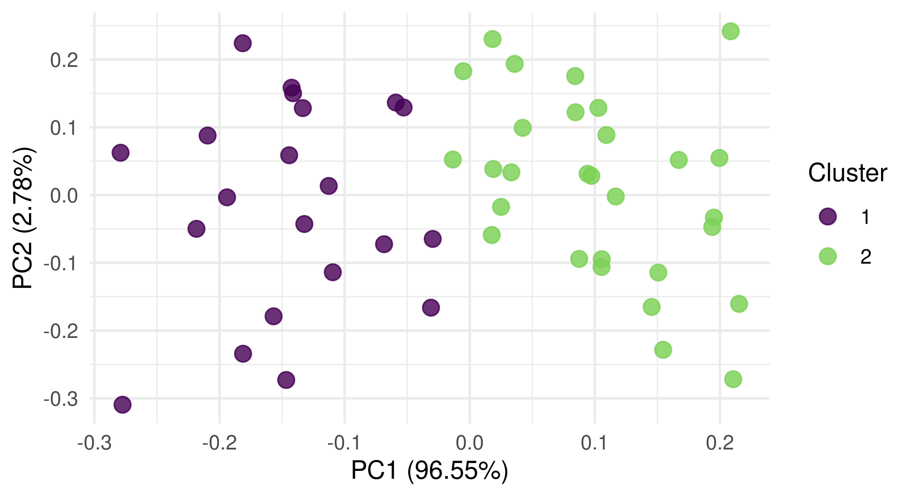
tsk("usarrests") 做 PCA 所得的前两个主成分。
轮廓图通过可视化「同一簇内的观测无论单独看还是作为整体看是否都被放在了合适的位置」，来直观评估所估计簇的质量。图中包含一条虚线，用于表示所有数据点的平均轮廓系数；每个数据点的轮廓值则由一根按所属簇着色的条形表示。在我们这个具体例子中，平均轮廓指数为 0.59。如果某个簇的平均轮廓值低于平均轮廓系数这条线，就意味着该簇定义得不够好。
接着用我们这个新例子来看，我们发现（图 13.11）相当多的观测实际上落在平均线之下、且接近零，因此我们簇分配的质量不太好，这意味着许多观测很可能被分到了错误的簇里。
autoplot(prediction, tsk_usarrests, type = "sil")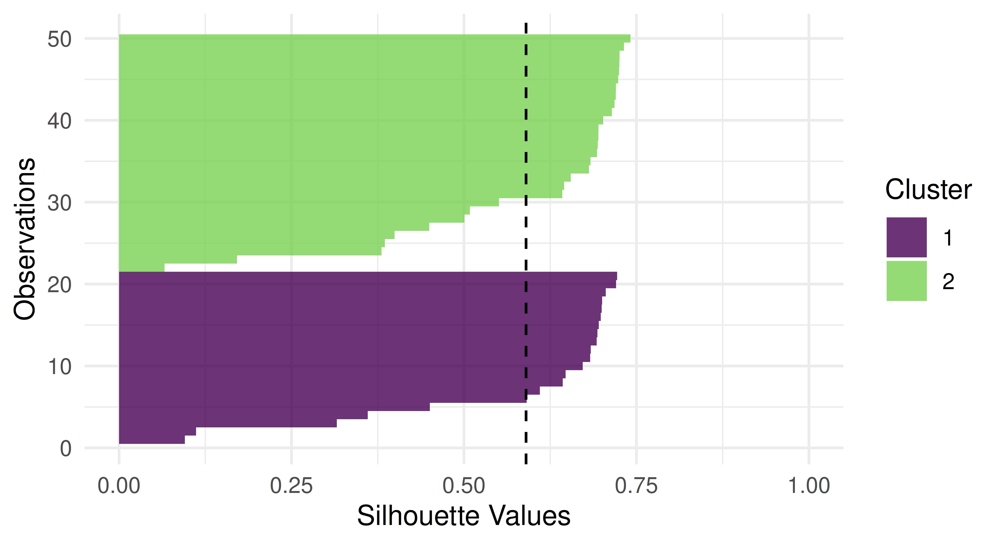
lrn("clust.kmeans") 在 tsk("usarrests") 上所作预测的轮廓图。
最后，我们用 tsk("usarrests") 和若干内置的聚类学习器做一次小型基准测试研究：
tsk_usarrests = tsk("usarrests")
learners = list(
lrn("clust.featureless"),
lrn("clust.kmeans", centers = 4L),
lrn("clust.cmeans", centers = 3L)
)
measures = list(msr("clust.wss"), msr("clust.silhouette"))
bmr = benchmark(benchmark_grid(tsk_usarrests, learners,
rsmp("insample")))
bmr$aggregate(measures)[, c(4, 7, 8)] learner_id clust.wss clust.silhouette
1: clust.featureless 355808 NaN
2: clust.kmeans 37653 0.4774
3: clust.cmeans 47964 0.5319C-Means 和 K-均值算法都要明显优于无特征基线，但要判断二者中哪一个更适合我们的需求，仍需进一步的分析（以及可视化）。
本书最后要讨论的任务是空间分析。空间分析可以是任何其他机器学习任务（例如回归或分类）的一个子集，其定义依据是数据集中存在空间信息——通常以坐标的形式存储，坐标常被命名为「x」和「y」，或「lat」和「lon」（分别表示「纬度」和「经度」）。
空间分析之所以能作为独立任务，是因为空间数据必须被谨慎处理——这是由「自相关（autocorrelation）」的复杂性所决定的。相关性被定义为两个变量之间的统计关联，而自相关则是同一个变量内部的统计关联。用机器学习的语言来说：在一个包含特征与观测的数据集中，相关性发生在两个或更多特征以某种方式统计关联的时候，而自相关发生在同一个特征上两个或更多观测之间存在统计关联的时候。因此，自相关违反了机器学习中「数据集中所有观测相互独立」这一基本假设，其后果是我们对训练出的机器学习模型质量以及由此得到的性能估计的信心都会降低 (Hastie, Friedman, and Tibshirani 2001)。
空间数据中之所以存在自相关，是因为坐标中编码了隐含信息，例如两个观测（如城市、国家、大洲）是彼此靠近还是相距遥远。举个例子，假设我们要预测德国某次疫情暴发两个月之后的病例数（图 13.12）。疫情会从一个震中向外扩散，因此离德国越近的国家病例数越高，离德国越远的国家病例数越低（图 13.12，下图）。因此，从空间角度审视数据，就能看到邻近观测之间存在明显的自相关迹象。请注意，在这个例子中自相关是放射状的，但在实际情形中并不总是如此。
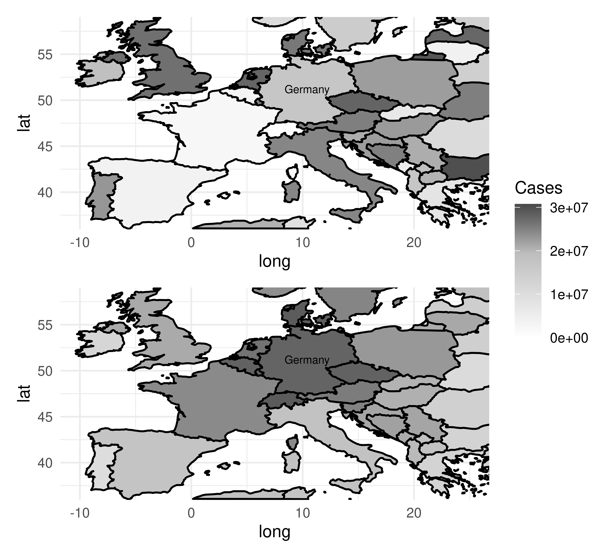
与本章前面讨论过的其他任务不同，这里在学习器和度量上没有底层实现上的差异。相反，我们在 mlr3spatiotempcv 中提供了额外的重采样方法，用以应对重采样过程中训练集与测试集之间因时空自相关而产生的相似性。
在本节中，我们始终使用 ecuador 数据集及其任务作为贯穿的示例。
背景与解释（译者注）：这是全书关于交叉验证原理最重要的一节，值得反复强调：交叉验证成立的前提是「测试折与训练折来自同一个分布，且相互独立」。在空间数据中，相邻近的点几乎必然共享大量信息（同一片土壤、同一段河流、同一份气象条件），于是训练折与测试折之间的「信息泄漏」会系统性抬高测试得分。原文用 ecuador 数据集给出了量化证据：同一棵决策树，用普通交叉验证得到 0.6911 的准确率，用空间交叉验证只有 0.5842，相差超过 10 个百分点——这个差额正是自相关泄漏造成的虚假乐观。实务建议：凡涉及地理信息的建模，都应默认改用空间/时空重采样；若确实用普通 CV，必须在文中说明该偏差的存在。
为了使用空间重采样方法，我们实现了 TaskClassif 和 TaskRegr 的两个扩展类以容纳空间数据，分别是 TaskClassifST 和 TaskRegrST。下面我们只展示分类的示例，回归的做法完全可以照搬。
library(mlr3spatial)
library(mlr3spatiotempcv)
# 从 `data.frame` 创建任务
tsk_ecuador = as_task_classif_st(ecuador, id = "ecuador_task",
target = "slides", positive = "TRUE",
coordinate_names = c("x", "y"), crs = "32717")
# 或者从 'sf' 对象创建任务
data_sf = sf::st_as_sf(ecuador, coords = c("x", "y"), crs = "32717")
tsk_ecuador = as_task_classif_st(data_sf, target = "slides",
positive = "TRUE")
tsk_ecuador
── <TaskClassifST> (751x11) ─────────────────────────────────────────────
• Target: slides
• Properties: twoclass
• Features (10):
• dbl (10): carea, cslope, dem, distdeforest, distroad,
distslidespast, hcurv, log.carea, slope, vcurv
• Target classes: TRUE (positive class, 67%), FALSE (33%)
* Coordinates:
X Y
1: 712882 9560002
2: 715232 9559582
3: 715392 9560172
4: 715042 9559312
5: 715382 9560142
---
747: 714472 9558482
748: 713142 9560992
749: 713322 9560562
750: 715392 9557932
751: 713802 9560862任务创建之后，你就可以像平常一样训练和预测了。
lrn("classif.rpart")$train(tsk_ecuador)$predict(tsk_ecuador)
── <PredictionClassif> for 751 observations: ────────────────────────────
row_ids truth response
1 TRUE TRUE
2 TRUE TRUE
3 TRUE TRUE
--- --- ---
749 FALSE FALSE
750 FALSE FALSE
751 FALSE TRUE然而，正如前面讨论过的，最好还是使用专门的重采样方法，以获得偏差更小的模型性能估计。
在介绍 mlr3spatiotempcv 中实现的空间重采样方法之前，我们先来展示一下：如果对空间数据使用非空间重采样方法，会出什么问题。下面我们在 tsk("ecuador") 上对一棵决策树做基准测试，使用两种不同的重复交叉验证重采样方法：第一种（「NSpCV」，即非空间交叉验证）是来自 mlr3 的非空间重采样方法，第二种（「SpCV」，即空间交叉验证）来自 mlr3spatiotempcv，是针对空间数据优化的。这个例子凸显出，「NSpCV」会让决策树看上去表现比实际更好，其估计性能要高得多；然而，这不过是一种因数据存在自相关而导致的过度自信的估计。
lrn_rpart = lrn("classif.rpart", predict_type = "prob")
rsmp_nsp = rsmp("repeated_cv", folds = 3, repeats = 2, id = "NSpCV")
rsmp_sp = rsmp("repeated_spcv_coords", folds = 3, repeats = 2,
id = "SpCV")
design = benchmark_grid(tsk_ecuador, lrn_rpart, c(rsmp_nsp, rsmp_sp))
bmr = benchmark(design)
bmr$aggregate(msr("classif.acc"))[, c(5, 7)] resampling_id classif.acc
1: NSpCV 0.6911
2: SpCV 0.5842在上面的例子中，由于底层存在的空间自相关，套用非空间重采样会得到高度相似的训练集和测试集。因此，这跟在用训练过的同一份数据上测试模型几乎没有区别，而为了得到诚实的性能结果，这正是应当避免的做法（参见第 2 章）。相比之下，空间方法已经考虑了自相关性，测试数据与训练数据之间的相关性较低（尽管仍会残留部分关联）。用 autoplot() 方法可以直观地看到这一点。在图 13.13 中，我们可视化了任务分别按照空间重采样方法（图 13.13，左图）和非空间重采样方法（图 13.13，右图）划分的情形。使用空间重采样时，相应的各个划分在空间上有清晰的分离；而使用非空间方法时，训练集与测试集的划分大量重叠（因而相关性更强）。
library(patchwork)
(autoplot(rsmp_sp, tsk_ecuador, fold_id = 1, size = 0.7) +
ggtitle("Spatial Resampling") +
autoplot(rsmp_nsp, tsk_ecuador, fold_id = 1, size = 0.7) +
ggtitle("Non-spatial Resampling")) +
plot_layout(guides = "collect") &
theme_minimal() &
theme(axis.text = element_text(size = 4), legend.position = "bottom")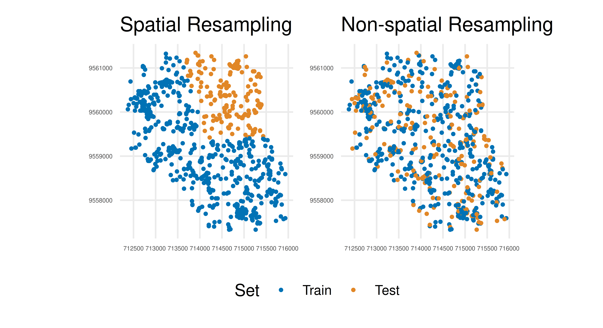
现在我们已经看到了空间重采样为何重要，接下来可以看看 mlr3spatiotempcv 中提供了哪些方法。我们添加的重采样方法可分为：
方法的选择可能取决于数据集的具体特性，不存在挑选某一种方法而轻易排除其他方法的简单规则；不同方法的完整细节可见 Schratz et al. (2021)——该论文有意避免推荐某一种方法，因为「最优」选择高度依赖于预测任务、数据中的自相关以及抽样设计的空间结构。每个已实现方法的文档中都包含该方法的细节以及原始文献的引用。
我们一直聚焦于空间分析，但在文中却使用了「时空（spatiotemporal）」和「时空（spatiotemp）」这样的说法。本节讨论的纯空间重采样方法，可以通过在任务中设置 "time" col_role（第 2.6 节）来扩展到时间分析（或空间与时间相结合的分析）——这是一个进阶话题，可能会在本书未来的版本中补充。关于三维时空可视化的具体细节，请参见 mlr3spatiotempcv 的可视化 vignette：https://mlr3spatiotempcv.mlr-org.com/articles/spatiotemp-viz.html。
到目前为止，我们讨论的都是如何通过重采样来应对时空特征；但如果你想做的是时空预测呢？在这种情况下，目标是在像元层面（即栅格图像中由几何分辨率定义的区域）上做出分类或回归预测。
为支持这类预测，我们创建了新函数 predict_spatial()，它允许使用以下任意一种空间数据类来做空间预测：
在下面的例子中，我们加载 leipzig_points 数据集用于训练，并用 as_task_classif_st 将其转为一个时空任务；同时加载栅格数据 leipzig_raster。两个文件都作为示例数据包含在 mlr3spatial 中。
library(mlr3spatial)
library(sf)
library(terra, exclude = "resample")
# 加载样本点
leipzig_vector = sf::read_sf(system.file("extdata",
"leipzig_points.gpkg", package = "mlr3spatial"),
stringsAsFactors = TRUE)
# 创建训练数据
tsk_leipzig = as_task_classif_st(leipzig_vector, target = "land_cover")
# 加载栅格影像
leipzig_raster = terra::rast(system.file("extdata", "leipzig_raster.tif",
package = "mlr3spatial"))现在我们就可以像平常一样，用一个分类学习器（本例中是随机森林）来训练和预测了。
lrn_ranger = lrn("classif.ranger")$train(tsk_leipzig)
prediction = predict_spatial(leipzig_raster, lrn_ranger,
format = "terra")
predictionclass : SpatRaster
size : 206, 154, 1 (nrow, ncol, nlyr)
resolution : 10, 10 (x, y)
extent : 731810, 733350, 5692030, 5694090 (xmin, xmax, ymin, ymax)
coord. ref. : WGS 84 / UTM zone 32N (EPSG:32632)
source : file188c47d8fa1c.tif
categories : categories
name : land_cover
min value : forest
max value : water在这个例子中，我们指定要生成一个 terra 对象，它可以直接用内置的绘图方法可视化。
plot(prediction, col = c("#440154FF", "#443A83FF", "#31688EFF",
"#21908CFF", "#35B779FF", "#8FD744FF", "#FDE725FF"))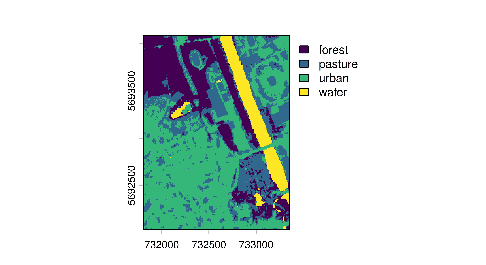
背景与解释（译者注）：这里补充一点坐标系背景，供中国读者使用时注意：ecuador 任务中设置的 crs = "32717" 是南半球 WGS 84 / UTM zone 17S（EPSG:32717）；而 leipzig_raster 输出显示的 EPSG:32632 则是北半球 UTM zone 32N。UTM 分带的编号与南半球编号并非简单镜像关系（UTM zone N 的南半球带号是 327XX、北半球是 326XX），混用会导致投影偏移。处理中国境内数据时应改用 EPSG:4490（CGCS2000 地理坐标）或对应的 UTM 带（如北京约落在 zone 50N，即 EPSG:32650）。另外，predict_spatial() 的 format 参数决定了返回对象的类型（这里指定 "terra"），若省略则返回默认格式；不同后端（stars、terra、raster）的绘图函数签名略有差异，移植代码时需相应调整。
回归模型通常预测的是目标在给定输入特征下的条件均值。分位数回归（quantile regression）则允许预测条件分位数，从而给出更能体现不确定性、信息量也更丰富的预测，或者对条件分布本身作出近似。它回答的不再是「给定这些特征，预期结果是什么？」，而是「在给定概率水平上（例如第 10 百分位、中位数、第 90 百分位），结果是什么？」。
这在那些希望对数据中的不确定性和极端情形建模的场景中特别有用：
估计分位数回归模型的一个关键概念是子弹球损失（pinball loss），它把 L1 损失（也就是平均绝对误差，MAE）推广到可针对任意分位数 \(\tau\) 进行优化。要理解这一点，我们需要回忆：中位数（即 0.5 分位数）使 MAE 最小。子弹球损失通过引入一种不对称性来修改 L1 损失，根据所选的分位数水平，让模型对「预测过低」或「预测过高」施加不同且不对称的惩罚。例如，令 \(\tau = 0.1\) 意味着「预测过高」的代价是「预测过低」的九倍，从而驱使模型系统性地低估目标。这迫使模型去估计分布（条件分布）的中心以外的某个特定分位数，而非其中心。我们可以直接把它与分位数联系起来：如果模型是针对某个给定的分位数 \(\tau\) 训练以最小化子弹球损失的，那么观测值中应该有 \(\tau \%\) 落在预测值之下，而 \((1 - \tau) \%\) 落在其之上。举例来说，用 \(\tau = 0.1\) 训练的模型会产生的预测，使得 10% 的观测值落在其预测之下，从而成为第 10 百分位的一个估计量。子弹球损失将在本章末尾再次作为评估指标出现。
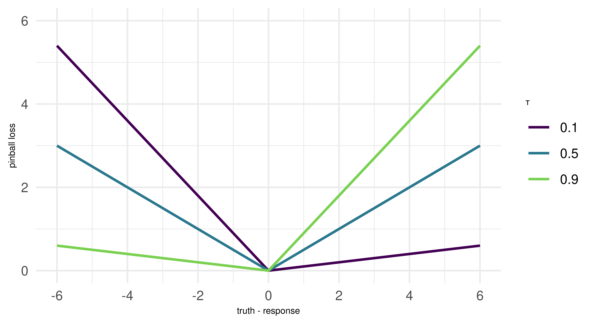
但请注意：虽然许多基于经验风险最小化的机器学习模型使用子弹球损失来估计分位数，但某些模型类的工作方式可能有所不同。不过，由于模型底层的训练过程位于 mlr3 之外，我们更为关心的是如何对分位数回归模型进行重采样和评估。这与其他任务的做法完全相同。由于这里只对分位数回归做了简要概述，如果读者希望获得该主题的方法学入门介绍，我们推荐 Yu, Lu, and Stander (2003)；若希望获得更详尽的论述，则推荐 Koenker (2005)。
背景与解释（译者注）：子弹球损失（pinball loss，也称 quantile loss）的定义为：L(y, f(x); τ) = τ·(y − f(x))（当 y ≥ f(x)），否则为 (1 − τ)·(f(x) − y)。当 τ = 0.5 时它恰好退化为 MAE/2，所以「子弹球」这个名字就来自「一颗球被抛向不同的方向、落点代价不同」的直观图像。需要注意两件事：其一，分位数回归**不需要**正态性假设，这正是它相对均值回归处理异方差数据的优势；其二，本节图 13.15 的坐标轴上没有标注具体的 τ 取值与损失数值，只是示意损失曲线随 τ 变化的形状，读者不必从中读出精确数值。另外，文中「令 τ = 0.1 意味着预测过高的代价是预测过低的九倍」这一说法，前提是把两侧误差按同一比例缩放（即比例 τ:(1−τ) = 0.1:0.9），原文未点明这一归一化约定，初学者容易误以为「代价」是绝对值之比。
让我们构造一个简单的合成数据集来演示分位数回归是如何工作的。
我们生成 10,000 个数据点，其中单变量特征 x 服从 1 到 15 之间的均匀分布，而目标 y 遵循 x 的某个非线性函数。为了让问题更有意思，我们在目标上加入了异方差高斯噪声，也就是说，方差会随 x 的增大而增大。
让我们把这些数据画出来，以便更好地感受它的样子。图中的点是数据的一个随机子集（10%）。那条曲线是真实的基础函数 \(f(x)\)，我们正是从中采样的，理想情况下我们希望把它恢复为所估计的后验中位数。
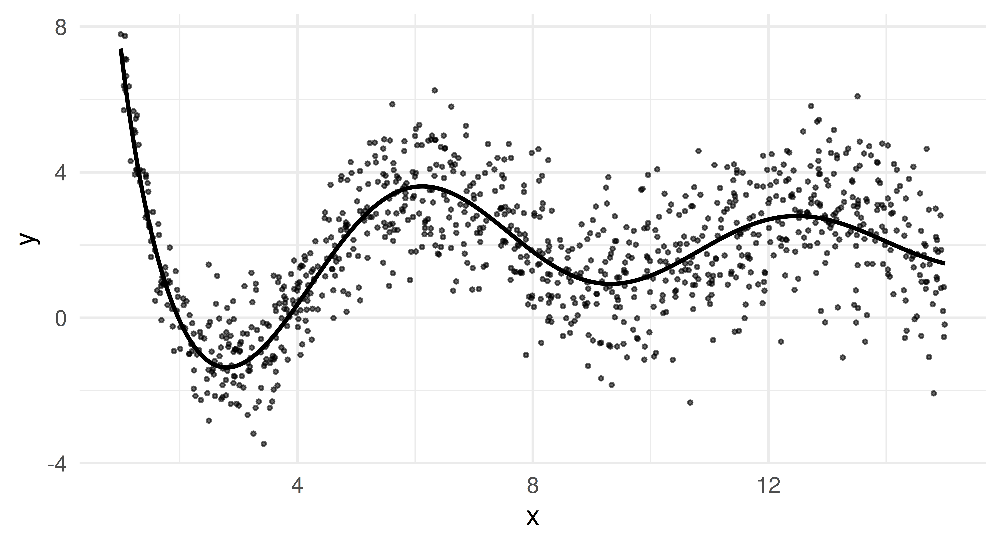
这幅图揭示了数据的两个本质属性。首先，\(f(x)\) 在 x 较小时振荡更剧烈，而随着取值变大则变得平缓。其次，我们可以清楚地看到异方差性：y 的方差随着 x 的增大而增大。
正因为后者，基于均值的模型将难以给出稳健的预测，在 x 取较大值时尤其如此，因为它们会受到极端偏离的严重影响。相比之下，中位数（0.5 分位数）能提供更稳定的估计，而其他分位数（例如 0.05 和 0.95）则让我们能够估计不确定性和极端结果。
既然数据集已经生成完毕，我们把它转成一个普通的回归任务，并划分出训练集与测试集。同时我们指定要估计五个分位数：一个是即将被设定为指定 response 的中位数，另外四个则用于刻画上下方向的离散程度。
library(mlr3verse)
task = as_task_regr(data, target = "y")
splits = partition(task)
qs = c(0.05, 0.25, 0.5, 0.75, 0.95)我们使用的第一个学习器是随机回归森林（lrn("regr.ranger")），它在 mlr3learners 中实现，是一种基于树的集成方法，能够很好地处理复杂的交互作用和非线性关系。我们把这个学习器配置为预测所指定的各个分位数，并把中位数分位数标记为专用的 response。然后我们照常训练和预测。
lrn_ranger = lrn("regr.ranger", predict_type = "quantiles",
quantiles = qs, quantile_response = 0.5)
lrn_ranger$param_set$set_values(min.node.size = 10, num.trees = 100, mtry = 1)
lrn_ranger$train(task, row_ids = splits$train)
prds_ranger = lrn_ranger$predict(task, row_ids = splits$test)
prds_ranger
── <PredictionRegr> for 3300 observations: ──────────────────────────────
row_ids truth q0.05 q0.25 q0.5 q0.75 q0.95 response
3 3.8206 -0.7810 0.9070 1.2139 1.9811 3.1055 1.2139
8 -0.5954 -1.0846 -0.7615 -0.2460 0.2710 0.3579 -0.2460
11 -0.9468 -1.6177 -1.1134 -0.8525 -0.0454 0.7849 -0.8525
--- --- --- --- --- --- --- ---
9989 2.8450 1.5456 2.6447 2.9574 3.5199 3.7353 2.9574
9990 5.8265 1.3740 1.9528 2.2216 2.6490 3.7919 2.2216
9995 3.9021 0.9102 1.7043 2.7458 4.1889 4.5151 2.7458预测对象中为所有分位数都增加了额外的列。我们设置了 $quantile_response = 0.5，意思是 response 等于 0.5 分位数。
现在我们把预测出的分位数与真实的测试数据作图对比。每条彩色曲线代表一个不同的分位数估计，黑色曲线则代表真实函数。
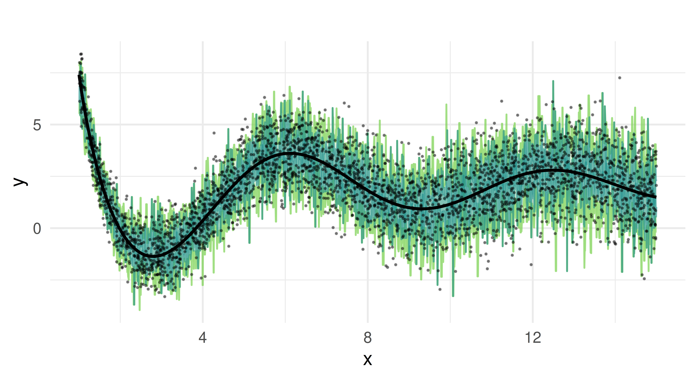
我们可以看到，随机森林抓住了函数的整体趋势。它给出的分位数估计随 x 增大而增大，并且得益于集成模型的性质，很好地处理了我们数据中的非线性。
但预测出的分位数显得过于锯齿化、尖峰密集，这提示模型可能是在过拟合训练数据中的噪声，而不是捕捉平滑的趋势。中位数估计在真实函数附近振荡，却并没有始终与之对齐。这些局限的根源在于随机森林构造分位数的方式。在分位数回归森林中，预测来自单棵树各个终端节点内响应值的经验分布。每棵树把特征空间划分为若干区域，落在同一区域（终端节点）的所有观测共享同一个条件分布估计，而分位数则根据这些观测的排序值计算出来。由于每个终端节点中的样本数量有限，估计出的分位数是离散的而非连续的，这便导致预测呈现特有的「阶梯」形态。如果某个终端节点只包含少量观测，相邻节点之间估计出的分位数就可能发生突变，从而产生锯齿状或尖峰状的预测。此外，跨树的聚合是对多个阶梯函数取平均，其结果也可能是分段常数且带噪声的分位数估计。
背景与解释（译者注）：此处有一处原文硬伤：在 13.6.2.1 节中刚刚展示的是随机回归森林（lrn("regr.ranger")）的结果，但紧随其后的那幅图（unnamed-chunk-6-1.png）的图注却写着「用 GAM 做分位数回归的结果」——这显然是复制粘贴时沿用了后面 13.6.2.2 节 GAM 图的图注。译者按规范不改原文图注，也未替换图片，仅在此标注：该图实为随机森林的结果，不是 GAM 的结果；真正的 GAM 图在 13.6.2.2 节。文中「随机森林预测的分位数看起来过度锯齿化」这段分析正是针对这幅图的，因此对照阅读时不应误以为 GAM 也有此问题。
为了解决我们在随机回归森林上观察到的局限，接下来我们将分位数回归与平滑广义加性模型（GAM）结合，作为一种替代方法。这种方法能给出更平滑的估计，也可能提升分位数预测的稳健性。与基于树的方法不同，GAM 使用平滑样条而非离散的划分来构造其预测函数。这使它们非常适合处理连续且有结构的数据——在这里这与我们的模拟设定恰好相符，尽管在更贴近现实的场景中我们并不会预先知道这一点。
我们从分位数 GAM 得到的预测区间与传统 GAM 中的置信区间不同：它并非量化估计函数本身的不确定性，而是让我们能够直接进行预测推断，从而构造出逐观测的预测区间。
我们将用 lrn("regr.mqgam")（来自 mlr3extralearners）来开始演示。如同前面针对随机回归森林所做的那样，我们用先前指定的各个分位数来拟合模型。
library(mlr3extralearners)
lrn_mqgam = lrn("regr.mqgam", predict_type = "quantiles",
quantiles = qs, quantile_response = 0.5)
lrn_mqgam$param_set$values$form = y ~ s(x)
lrn_mqgam$train(task, row_ids = splits$train)
prds_mqgam = lrn_mqgam$predict(task, row_ids = splits$test)训练完成后，我们为测试集生成预测并把结果可视化。
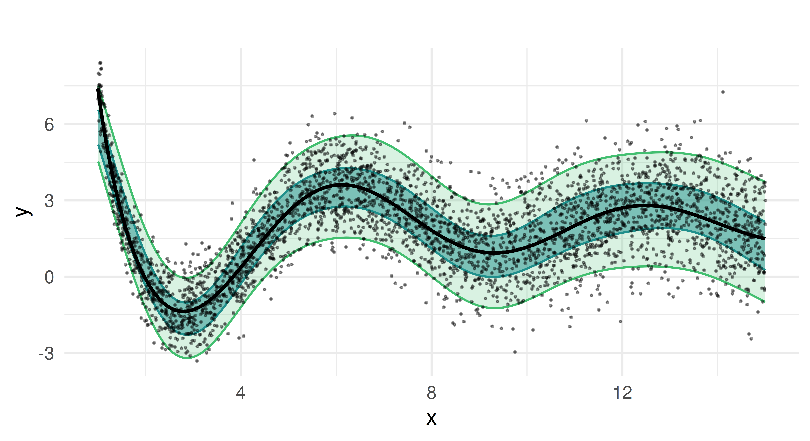
与随机回归森林相比，分位数 GAM 给出的估计更平滑，这正是加性模型应有的表现。预测的中位数紧密贴合真实函数，估计出的预测区间也很好地刻画了目标的异方差性。值得注意的是，各分位数的覆盖率更加稳定，没有出现随机森林方法中那种波动。
mlr3verse 中有多个学习器无法同时预测多个分位数。为此，我们还将展示如何使用来自 mlr3pipelines 的 po("learner_quantiles")，它可以包装一个学习器，把功能扩展为一步处理多个分位数。第 7 章和第 8 章已经介绍了 mlr3pipelines。我们把这个 pipeop 与 lrn("regr.qgam") 一起使用，后者是一个分位数回归 GAM 学习器，只能针对单个分位数训练。
随后我们就可以用 GraphLearner 对测试集做预测了。
graph_lrn_qgam = as_learner(po_qgam)
graph_lrn_qgam$train(task, row_ids = splits$train)
prds_qgam = graph_lrn_qgam$predict(task, row_ids = splits$test)到目前为止，我们只看了在测试数据上预测结果的可视化。现在我们来评估并基准测试这两个模型。
为了评估各模型在测试数据上预测分位数的效果如何，我们计算子弹球损失。一般来说，对给定的分位数 alpha，子弹球损失的绝对值越小表示准确性越高。由于极端分位数（例如 0.05 或 0.95）代表罕见事件、可用于估计的数据更少，我们通常预期它们的损失会高于中位数。
measures = list(msr("regr.pinball", alpha = 0.05, id = "q0.05"),
msr("regr.pinball", alpha = 0.25, id = "q0.25"),
msr("regr.pinball", alpha = 0.5, id = "q0.5"),
msr("regr.pinball", alpha = 0.75, id = "q0.75"),
msr("regr.pinball", alpha = 0.95, id = "q0.95"))
prds_ranger$score(measures) q0.05 q0.25 q0.5 q0.75 q0.95
0.1562 0.4301 0.5331 0.4341 0.1628 prds_mqgam$score(measures) q0.05 q0.25 q0.5 q0.75 q0.95
0.1224 0.3791 0.4793 0.3830 0.1224 在这种情形下，更极端分位数的损失低于中位数的损失。用 GAM 建模得到的分位数比随机森林拟合得更好。这与我们此前得到的结果一致：GAM 产生的分位数估计比随机森林更平滑。
为了进一步评估模型质量，我们用 10 折交叉验证对模型进行重采样和基准测试。重采样之后，结果就可以被聚合并打分。其做法与第 3 章中确立的完全一致。
# 对重采样结果打分并聚合
acc_ranger = rr_ranger$score(measures)
rr_ranger$aggregate(measures) q0.05 q0.25 q0.5 q0.75 q0.95
0.1610 0.4297 0.5320 0.4361 0.1579 acc_mqgam = rr_mqgam$score(measures)
rr_mqgam$aggregate(measures) q0.05 q0.25 q0.5 q0.75 q0.95
0.1220 0.3756 0.4713 0.3789 0.1230 最后，我们在一次基准测试中比较这两个学习器：
learners = lrns(c("regr.ranger", "regr.mqgam"), predict_type = "quantiles",
quantiles = qs, quantile_response = 0.5)
design = benchmark_grid(task, learners, cv10)
bmr = benchmark(design)bmr_scores = bmr$score(measures)
bmr_agg = bmr$aggregate(measures)
bmr_agg[, -c(1, 2, 5, 6)] task_id learner_id q0.05 q0.25 q0.5 q0.75 q0.95
1: data regr.ranger 0.1805 0.4571 0.5740 0.4620 0.1807
2: data regr.mqgam 0.1698 0.5596 0.7282 0.5813 0.1838总的来说，所有标准的 mlr3 工作流——也就是重采样、基准测试、调参以及管道的使用——都可以像应用于其他预测类型的回归学习器那样，原封不动地应用到分位数回归学习器上。
在本节中，我们学会了如何在 mlr3 中使用分位数回归。虽然两个模型都抓住了数据的整体趋势，但基于 GAM 的方法提供了更平滑的分位数估计和对预测区间更好的覆盖。随机森林模型则表现出更大的变异性，并且在过拟合方面较为吃力，在极端分位数处尤其如此。
背景与解释（译者注）：此处有一处必须指出的原文硬伤，而且是**结论与数据自相矛盾**：前面两处比较（测试集打分 0.1562/0.4301/… 对 0.1224/0.3791/…，以及 10 折 CV 聚合 0.1610/0.4297/… 对 0.1220/0.3756/…）都显示 regr.mqgam 全面占优；但紧接其后的最终 benchmark 输出却是：
ranger: 0.1805 0.4571 0.5740 0.4620 0.1807
mqgam : 0.1698 0.5596 0.7282 0.5813 0.1838
即在 q0.25、q0.5、q0.75、q0.95 上 mqgam 的损失反而更高，与前文结论方向完全相反。译者按规范不修改原文数据与结论，仅在此标注：正确理解应以代码可复现的结果为准——随机森林在中间四个分位数上并不劣于 GAM，原文段落「基于 GAM 的方法提供了更平滑的分位数估计和更好的覆盖」在本例数据上并不成立（或至少结论所依据的那次 benchmark 结果有误）。另一个易错点：本节多次强调「更极端的分位数损失应更高」，因为极端分位数的样本更少；但本例输出恰好相反（q0.05 与 q0.95 的损失都低于 q0.5），原因是本例方差随 x 单调递增（variance = 0.5·√x），极端分位数对应的区间在局部上反而更「好预测」，这也再次说明不能套用经验法则。
在本章中，我们探索了如何走出回归与分类的范畴，看看 mlr3 中的类如何被用来实现其他机器学习任务。代价敏感分类通过假定假阴性与假阳性相关的代价不相等，扩展了「常规」的分类设定。仅利用 mlr3 中的特性就可以运行代价敏感分类实验。mlr3proba 中提供的生存分析，可以被看作结果可能被删失（censored）的回归问题——所谓删失，指的是在给定的时间范围内该结果可能永远不会被观测到。mlr3proba 中最后一个任务是密度估计，也就是那个用于估计单变量概率分布的无监督任务。使用 mlr3cluster，你可以对观测做聚类分析，即根据各变量上的相似性对观测进行分组。使用 mlr3spatial 和 mlr3spatiotempcv 可以进行空间分析，把坐标当作特征来做出预测并完成空间预测。最后，我们看到了如何利用 "quantiles" 这一预测类型来预测条件分位数并构造预测区间。mlr3 的接口具有很强的可扩展性，这意味着未来的机器学习任务可以（而且将会）被加入我们的体系，我们也会在本书未来的版本中把它们补充到本章里。
| 类 | 构造函数/函数 | 字段/方法 |
|---|---|---|
MeasureClassifCosts |
msr("classif.costs") |
- |
PipeOpTuneThreshold |
po("tunethreshold") |
- |
TaskSurv |
as_task_surv() |
$data() |
PipeOpDistrCompositor |
po("distrcompose") |
- |
TaskDens |
as_task_dens() |
$data() |
TaskClust |
as_task_clust() |
$data() |
TaskClassifST |
as_task_classif_st() |
$data() |
| - | predict_spatial() |
tsk("german_credit") 上运行一次基准测试实验，使用 lrn("classif.featureless")、lrn("classif.log_reg") 和 lrn("classif.ranger")。通过把这些学习器包进 po("learner_cv")（采用两折交叉验证）再接一个 po("tunethreshold")，来调优所有学习器的预测阈值。使用 msr("classif.costs", costs = costs)，其中 costs 矩阵如下：真阳性为 -10，真阴性为 -1，假阳性为 2，假阴性为 3。在 po("tunethreshold") 中以及评估你的基准测试实验时都使用这个度量。lrn("surv.rfsrc")（来自 mlr3extralearners）训练并测试一个生存森林。用 tsk("rats") 和 partition() 运行这个实验。用 RCLL 度量评估你的模型。lrn("dens.hist") 来估计 mlr3proba 包中「precip」任务的密度，并用 logloss 度量评估你的估计。作为进阶目标，去查阅 distr6 的文档，了解如何进一步分析你估计出的分布。k 分别等于 2、3 和 4 的 k-means 学习器的性能。根据轮廓得分，你会选择哪个 k 值？tsk("mtcars") 上手动 $train() 一个来自 mlr3extralearners 的 GBM 回归模型，用以预测目标变量的第 95 百分位。务必先划分数据，只用训练集拟合学习器。用测试集以子弹球损失评估你的学习器。请按如下格式引用本章：
Sonabend R, Schratz P, Pulatov D, Zobolas J, Koers L. (2024). Beyond Regression and Classification. In Bischl B, Sonabend R, Kotthoff L, Lang M, (Eds.), Applied Machine Learning Using mlr3 in R. CRC Press. https://mlr3book.mlr-org.com/beyond_regression_and_classification.html.
@incollection{citekey,
author = "Raphael Sonabend and Patrick Schratz and Damir Pulatov and John Zobolas and Lona Koers",
title = "Beyond Regression and Classification",
booktitle = "Applied Machine Learning Using {m}lr3 in {R}",
publisher = "CRC Press", year = "2024",
editor = "Bernd Bischl and Raphael Sonabend and Lars Kotthoff and Michel Lang",
url = "https://mlr3book.mlr-org.com/beyond_regression_and_classification.html"
}